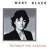

Celtic Lyrics Corner > Artists & Groups > Mary Black > Without The Fanfare > Nightime
|  | Nightime |
| Credits : | Donagh Long |
| Appears On : | Without The Fanfare |
| Language : | English |
Lyrics :
City walls where the neon spits as it falls
Two dark shadows fade in the night
This is no place for love
And in the park where the streetlight kisses the dark
Silent waves and times their own
They'll have their own way now
In the nightime neon sunset leaps
Out of the heart of the city streets
To the pavement where the dancing girls go down
To another world where the bright lights always shine
From the pale love and the painted face
Cheap disguises of another race
Where the sweet life and the flowing wine
Makes me light in my head and takes the trouble off my mind
But I know that goes so far
Chorus
:
We could be like lovers, too
Dancing in this frozen room
Hold me, hold me, stand so close
Take the time, don't leave
Don't leave me here, there's danger
I heard the voices in the night
Flashing in the hills
The smell of burning on the wind
We could be in danger
From the strangers here inside
From the glory in their lives
And the passion in their eyes
(Chorus)
In the nightime neon sunset leaps
Out of the heart of the city streets
To the pavement where the dancing girls go down
To another world where the bright lights always shine
From the pale love and the painted face
Cheap disguises of another race
Where the sweet life and the flowing wine
Makes me light in my head and takes the trouble off my mind
But I know that goes so far
(Chorus 3x)